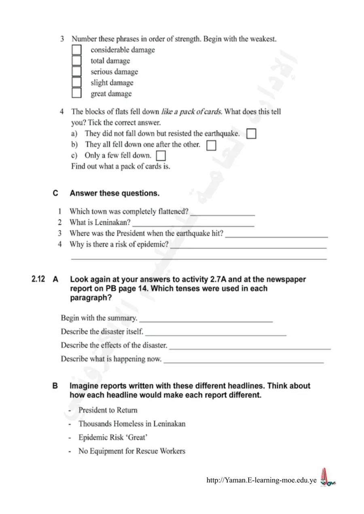

2.12 A Look again at your answers to activity 2.7A and at the newspaper report on PB page 14. Which tenses were used in each paragraph?
Begin with the summary. ______ Describe the disaster itself. ______ Describe the effects of the disaster. ______ Describe what is happening now. ______ B Imagine reports written with these different headlines. Think about how each headline would make each report different. - President to Return - Thousands Homeless in Leninakan - Epidemic Risk 'Great' - No Equipment for Rescue Workers (WB p. 28) C Write your own report. Choose one of the headlines from activity B before you start. • Include things that people actually said . Look at the texts on PB page 10 and study the punctuation used when writing down what people say. • Think about which pictures you would use. • Remember to check your report before you write it out neatly.
people actually said . Look at...، وحُفظت حرفياً التزاماً بالقاعدة الذهبية 2.[
{
"num": 1,
"prompt": "1 Begin with the summary. ______",
"answers": [
"Present perfect"
]
},
{
"num": 2,
"prompt": "2 Describe the disaster itself. ______",
"answers": [
"Past simple"
]
},
{
"num": 3,
"prompt": "3 Describe the effects of the disaster. ______",
"answers": [
"Past simple and Present simple"
]
},
{
"num": 4,
"prompt": "4 Describe what is happening now. ______",
"answers": [
"Present continuous"
]
}
][
{
"label_ar": "1) العنوان المختار من B وزاوية التركيز",
"placeholder": "Epidemic Risk 'Great' (focuses on cholera, typhoid and urgent need for clean water after the 6.9 earthquake)."
},
{
"label_ar": "2) فقرة الملخص (Present perfect + أرقام PB ص 16)",
"placeholder": "A terrible earthquake measuring 6.9 on the Richter scale has killed over 55,000 people in Armenia and caused severe danger of disease."
},
{
"label_ar": "3) تفاصيل الحدث وآثاره (Past simple + اقتباس مباشر بترقيم PB ص 12)",
"placeholder": "The earthquake hit Spivak at 11.41 a.m. on 7 December 1988. In Leninakan, one in five buildings collapsed. 'There is no clean drinking water,' said a nurse. 'We need clean water now.' Rescue workers worked with their bare hands."
},
{
"label_ar": "4) ما يجري الآن (Present continuous) + اختيار الصورة المرافقة من PB ص 16",
"placeholder": "President Gorbachov is interrupting his trip to the USA to take charge of rescue efforts. [Selected picture: Rescue workers look for survivors / Homeless people keep warm around a fire]."
}
]{
"wb_ocr_vs_image": "قُورنت صفحتا WB ص 27–28 مع tesseract.js eng: صُحّحت رموز النقاط النجمية ('¢', '*') و'2.12 A' و'¢ Include' بصرياً من wb-028.png وwb-029.png، وحُفظت المسافة المطبوعة قبل النقطة في 'actually said . Look' حرفياً."
}